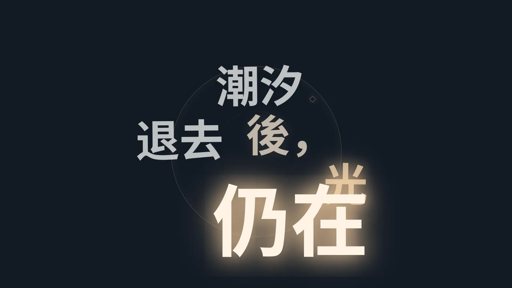
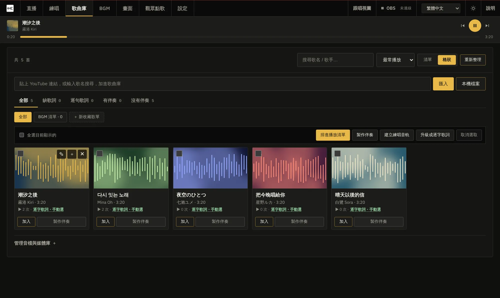
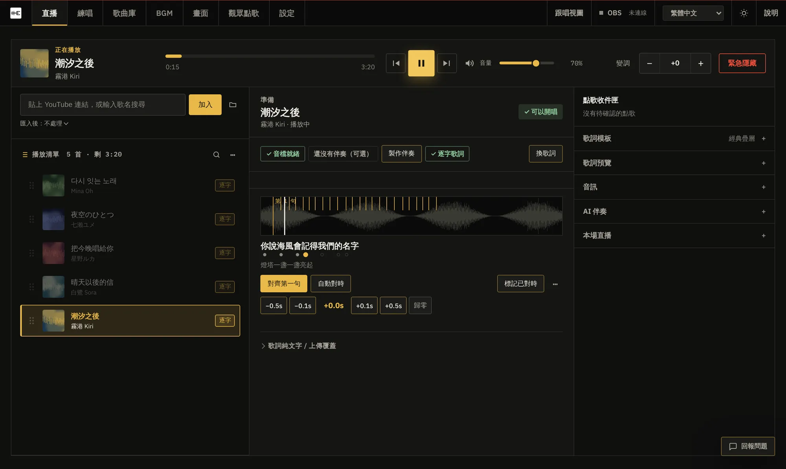
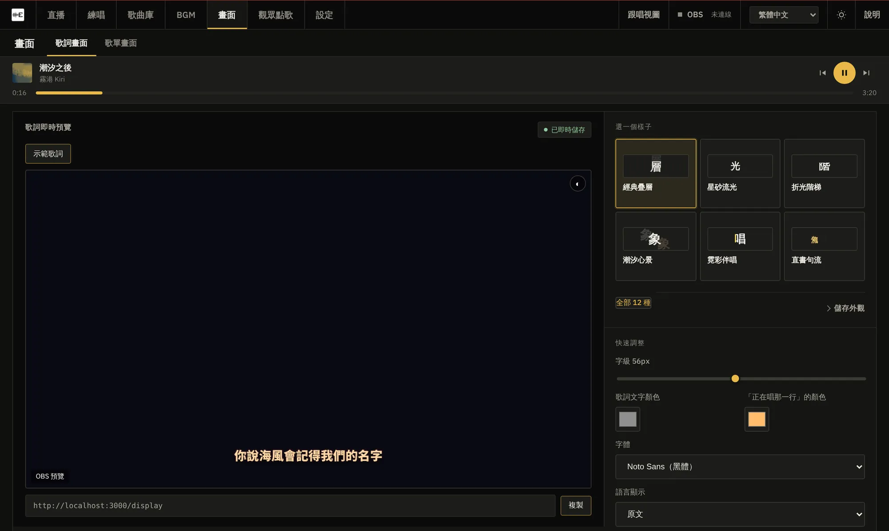
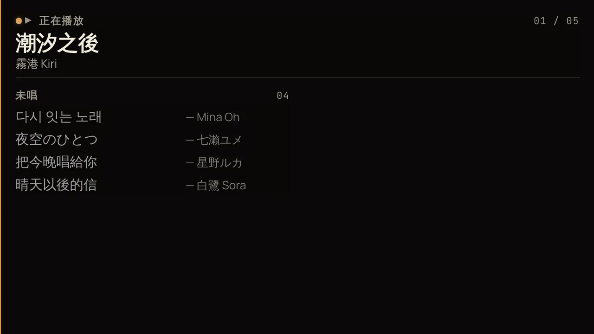
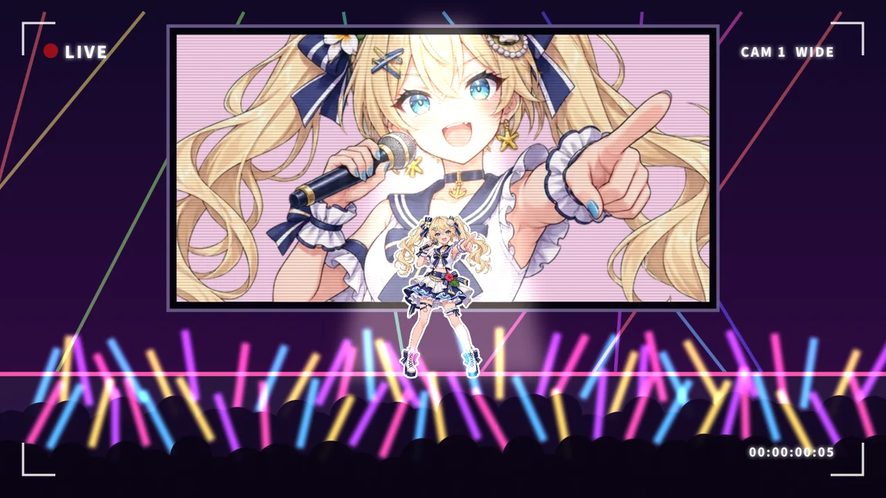
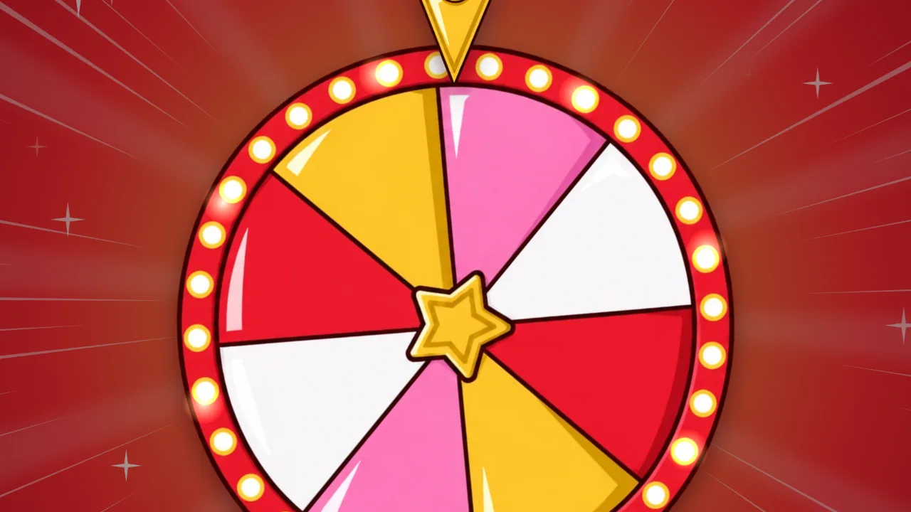
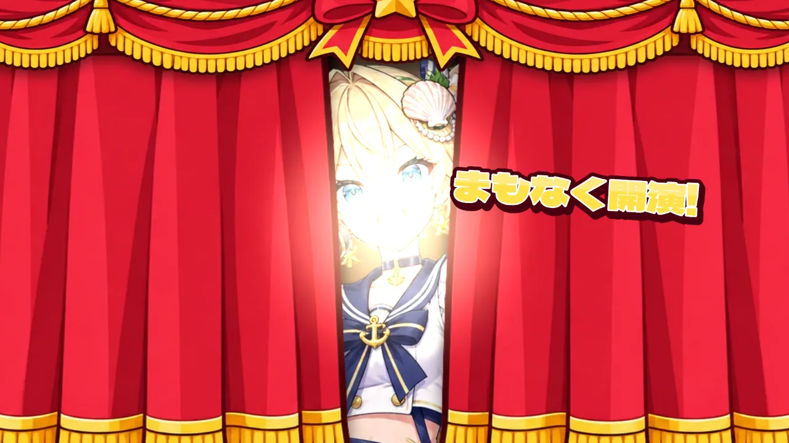
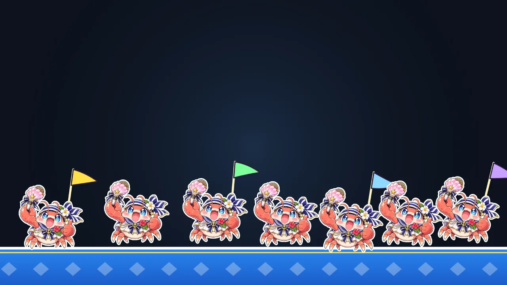
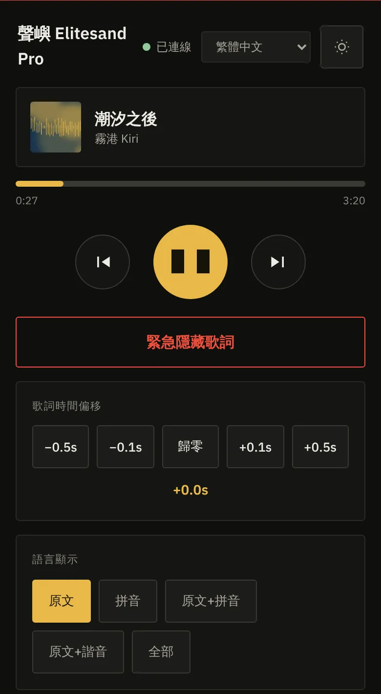

你只管唱歌， 畫面交給聲嶼。
給 VTuber 與歌回實況主的免費工具。在自己的電腦上執行，OBS 直接載入逐字歌詞、直播歌單和訂閱演出，換歌時歌詞自動跟上。
目前版本 1.3.0

OBS 畫面用原創示範歌詞實際拍下的 OBS 輸出。程式裡共有 12 種歌詞模板，字型、顏色、大小與位置都能調。
一場歌回，從準備到下播
不用改變你原本的 OBS 場景，只是多加幾個瀏覽器來源。
-
1
開台前，把歌放進歌曲庫
貼 YouTube 連結、輸入歌名搜尋，或直接拖進本機音檔。歌詞會從多個來源自動找，逐句歌詞可以批次升級成逐字。
- 找不到也能自己貼上，或上傳 LRC、SRT、VTT、TXT
- 可能對錯歌的歌詞會標出來，不會默默換掉
- 外語歌可以顯示拼音或諧音，跟著唱更容易

-
2
直播中，一個頁面顧全部
播放、切歌、變調、調音量，歌詞時間差一點就直接拉。遇到狀況，一鍵把 OBS 上的歌詞藏起來。
- 升降 Key 時伴奏和人聲兩軌保持同步
- 快捷模板：Ctrl+Alt+數字，一鍵換整套畫面
- BGM 待機音樂：沒在唱歌的空檔自動播放

-
3
在 OBS 加上瀏覽器來源
歌詞、歌單、演出各有一個網址，背景透明，直接疊在你的畫面上。在面板裡改設定，OBS 立刻跟著變。
- 直播歌單：已唱、正在唱、接下來，跟著播放自動更新
- 極簡歌單：大字顯示現在這首，跑馬燈列出已唱
- 下播後，歌單可以直接變成 YouTube 章節時間


OBS 上的直播歌單
有人訂閱、贈訂、揪團， 整個畫面一起慶祝
43 種全畫面演出，依份數分級。每一級的門檻、開關和要播哪一種，都由你決定。




不打斷唱歌
唱歌中收到的演出會等這首唱完再播，演出時背景音樂自動調小。
換成你的角色
演出裡的角色和吉祥物可以換成自己的圖，圖只存在你的電腦裡。
先試播再上場
面板可以模擬 Twitch 事件，不用等真的有人訂閱就能看效果。
關掉的等級會遞補
某一級關掉時，會改演下一個比較小、還開著的等級。
還有這些
文字PV
把歌詞排成會動的文字影像，部件範圍和風格開關都能自己選。
跟唱視圖
給自己看的大字歌詞，可以置頂在其他視窗上，雙語歌會一起顯示譯文。
歌曲筆記
整首或逐句寫下換氣、提醒，只有你看得到，不會出現在 OBS 上。
精準對時實驗性
中文歌可以聽歌詞內容自動對時，版本不同的段落也會逐句校正。
AI 伴奏實驗性
在自己的電腦上把歌分離成伴奏。需要另外安裝 AI 伴奏元件。
練唱測試版
看著音高線練歌，有 A–B 循環、弱句回饋，也能開觀眾挑戰。
觀眾點歌，你確認了才算數
聊天室指令和忠誠點數的點歌都先進收件匣，你按下確認才會排進歌單。
Twitch 點歌
支援聊天室指令與忠誠點數，有冷卻和次數限制，避免被洗版。
觀眾點歌頁
觀眾打開網頁就能點歌，頁面附使用教學。
手機遙控
掃一次 QR Code 配對，手機就能切歌、對時、換模板、緊急隱藏歌詞。

- 下載安裝檔
只從 GitHub Releases 下載。可以用 Release 頁上的 SHA-256 核對檔案。
- Windows 跳出提醒時
安裝檔目前沒有程式碼簽章，可能出現 SmartScreen。確認是官方檔案後，按「其他資訊」→「仍要執行」。
- 第一次開啟
跟著 3～5 分鐘的導覽，加一首歌、確認歌詞，再把網址放進 OBS。
- 之後的更新
有新版時程式內會提示，照畫面更新即可。跨太多版本時，Release 說明會告訴你要不要下載完整安裝檔。